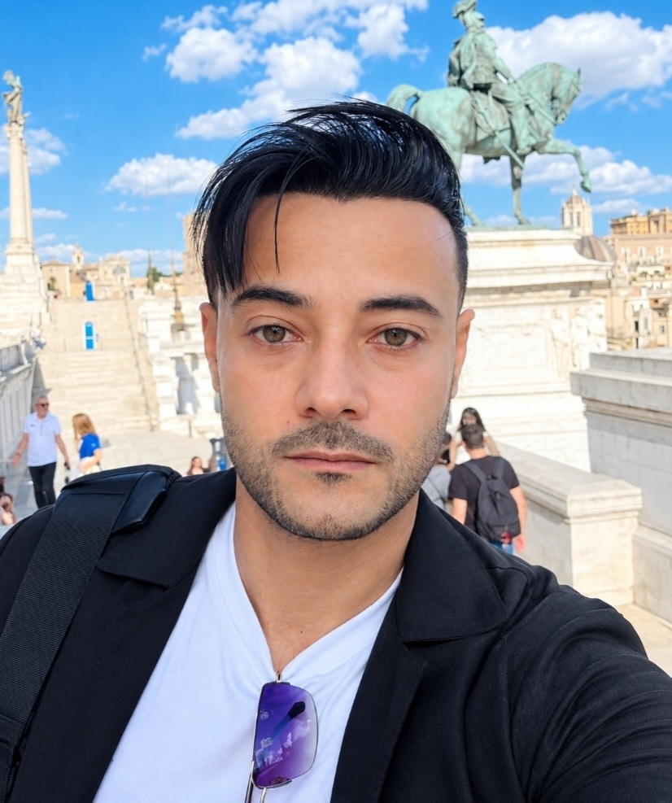

Labs réseau
Conception et configuration de réseaux : adressage, VLAN, routage et segmentation, testés en environnement virtuel.
Je travaille dans le domaine de la cybersécurité et des réseaux, avec un intérêt pour la sécurisation des infrastructures, la protection des systèmes et des accès, l’analyse des vulnérabilités et les tests d’intrusion.

Mes laboratoires pratiques en réseau et sécurité.
Conception et configuration de réseaux : adressage, VLAN, routage et segmentation, testés en environnement virtuel.
Mise en place de la répartition de charge : serveurs virtuels, pools, moniteurs de santé et persistance de session.
Configuration d'un pare-feu : politiques de sécurité, NAT, filtrage et VPN.